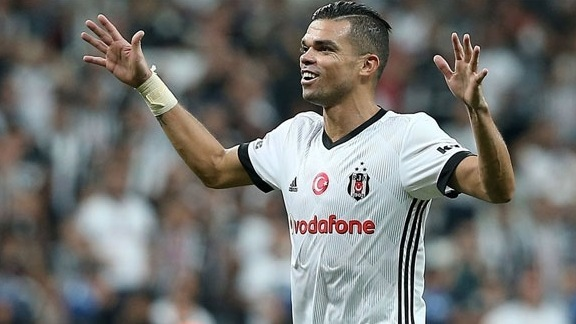

Pepe haalt uit naar fans Real: ‘Ze zijn niet zo fanatiek en gepassioneerd’
« Vorige  Volgende »Pepe ruilde Real Madrid afgelopen transferwindow in voor Besiktas en de overstap is de verdediger zeer goed bevallen. De Portugees zegt dat hij een goede tijd heeft gehad bij de Spaanse grootmacht, maar geeft bij het Spaanse televisiestation La Sexta tevens aan dat hij de houding van de fans van de Koninklijke allerminst gaat missen.
"De fans van Besiktas zijn fantastisch. Toen ik speelde voor Real Madrid moesten we onszelf af en toe motiveren, omdat de fans niet zo fanatiek en gepassioneerd zijn. Hier bij Besiktas gaat iedere speler met volle motivatie het veld op om goed te presteren, waarbij we worden geholpen door de fans", aldus Pepe, die na tien jaar bij de Spaanse grootmacht mocht vertrekken.
Onderhandelingen over het verlengen van zijn contract bij Real liepen spaak, waarna Pepe transfervrij naar Turkije kon afreizen. Real bood de routinier een eenjarig contract, terwijl Pepe een verbintenis van twee seizoenen wilde aangaan. Internazionale en Paris Saint-Germain wilden de international graag inlijven, maar de routinier koos uiteindelijk voor Besiktas.